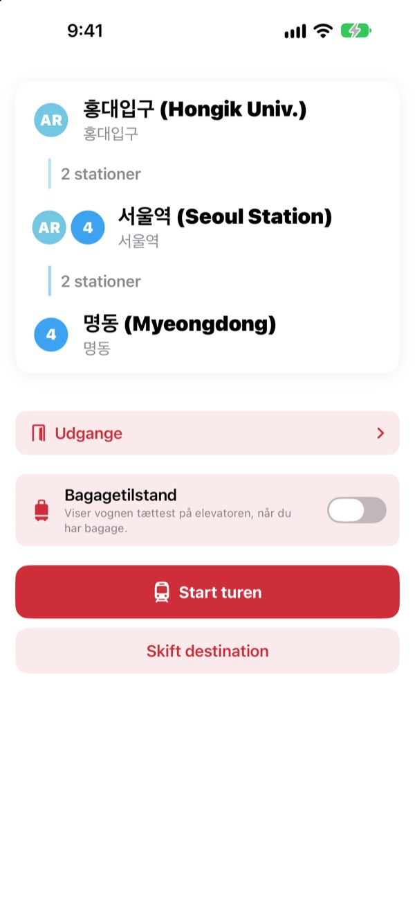
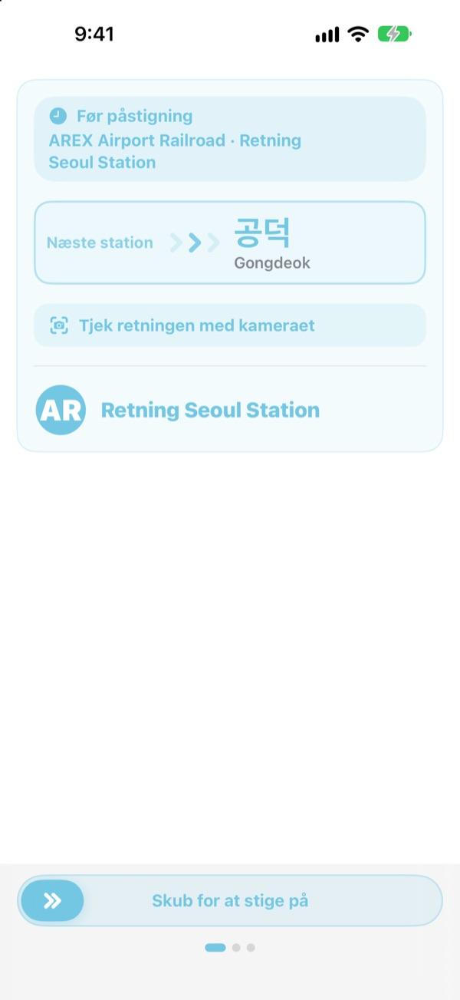
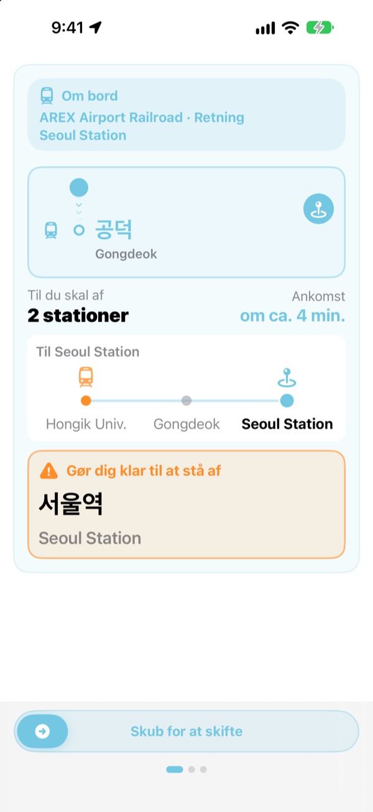
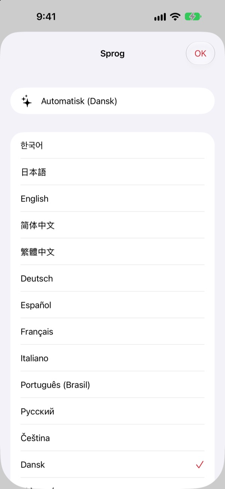

Den rigtige perron.
Den rigtige station.
Vælg start og mål, og KORA fortæller, hvilket tog du skal med, skrevet præcis som på skiltet på perronen. Under turen følger den din station og siger til, når du skal af.
Rutesøgning, kørselsretning og ankomster i realtid er gratis.

Tag en prøvetur
Du står på Hongik Univ. på AREX-linjen. Vælg, hvor du skal af, og tryk på Start turen for at se togets retning og beskederne om at stå af, ligesom i appen.
Har du stået på perronen uden at vide, hvilket tog du skal tage?
Kortapps viser linjen, men på perronen hænger der kun skilte med navne på stationer, du aldrig har hørt om. Tager du den forkerte retning, skal du flere stationer tilbage. Overhører du meddelelsen, kører du forbi. KORA kalder dit tog det samme som skiltet og advarer dig før din station.
Med skiltets egne ord
Toget, du skal med, vises præcis som destinationen står på perronen og på toget. I tvivl? Ret kameraet mod skiltet på perronen eller togets destinationsskilt, så siger KORA med det samme, om det er den rigtige retning.
Teksten genkendes helt på din iPhone.

Kør aldrig forbi igen
KORA kombinerer ankomster i realtid, GPS, togets afgange og stop og meddelelserne i toget for at vide, hvor du er. Når din station nærmer sig, får du „Gør dig klar til at stå af“ og derefter „Stå af nu!“ med vibration.
Turens fremskridt ses også på låseskærmen og i Dynamic Island.

23 sprog, koreanske navne bevaret
Brug hele appen på 23 sprog. Den starter på din iPhones sprog. Stationsnavne vises på koreansk ved siden af den latinske stavemåde fra skiltene, så du nemt kan genkende dem på perronen.

Kom i gang på tre trin
- 1
Vælg start
GPS finder den nærmeste station, eller du vælger selv.
- 2
Vælg mål
Skift, stationer og det rigtige tog vises med det samme.
- 3
Tryk på Start turen
Skærmen og en vibration siger til, når du skal af.
Hvad tilladelserne bruges til
- Lokalitet
- Finde den nærmeste station
- Kamera
- Læse skilte og destinationsskilte for at tjekke retningen
- Mikrofon og talegenkendelse
- Fange stationsnavnet og dørsiden i meddelelserne i toget
- Bevægelse og fitness
- Mærke afgange og stop, så den aktuelle station er mere præcis
Alle tilladelser er frivillige. Uden dem vælger du selv stationer og får stadig rute og beskeder om at stå af. Lokalitet, kamera og meddelelser behandles på din enhed og bliver aldrig optaget, gemt eller sendt.
At finde vej er altid gratis. Guide under turen er KORA Pro.
Gratis
- Rutesøgning og skift
- Destinationsskiltet på det tog, du skal med
- Ankomster i realtid
- Retningstjek med kameraet
- Aktuel station og besked om at stå af på skærmen
- Alle Pro-funktioner på dine første tre ture
KORA Pro
- På hver tur: guide på låseskærmen, genkendelse af meddelelser og vibration, når du skal af
- Udgange: hvad der ligger ved hver udgang på Seouls linje 1 til 8
- Påmindelse om sidste tog på linje 1 til 9
- Bagagetilstand: vognen tættest på elevatoren på linje 1 til 8
Betal én gang, og behold det. Intet abonnement.
Når de gratis ture er brugt, kan du stadig køre. Fremskridtet på skærmen bliver; kun låseskærm, genkendelse af meddelelser og vibration holder pause.
Ofte stillede spørgsmål
Appen kan ikke finde min station eller viser en forkert.
Gå til Indstillinger > Anonymitet & sikkerhed > Lokalitetstjenester > KORA, vælg „Når appen bruges“, og slå „Nøjagtig lokalitet“ til. Under jorden eller i store bygninger kan GPS tage fejl: tryk på kortet med den aktuelle station øverst, og vælg selv. Alt virker også uden adgang til lokalitet.
Hvordan bruger jeg retningstjekket med kameraet?
Når ruten vises, åbner du retningstjekket og fylder billedet med skiltet på perronen eller togets destinationsskilt. Det virker bedst med den koreanske tekst. Er skiltet mørkt, langt væk eller meget skråt, så gå tættere på og sigt lige på. Resultatet er en hjælp, så kig også på stationens skilte, hvis du er i tvivl.
Ankomster i realtid vises ikke.
Dataene kommer fra Seoul Open Data Plaza, kræver internet og findes mest for linjer i Seoul-området. Uden forbindelse eller realtidsdata skifter KORA automatisk til et skøn ud fra køreplan, GPS og accelerometer og guider dig videre. Rutesøgning virker offline.
Beskeden om at stå af kom lidt for tidligt eller sent.
Under jorden er GPS svag, så den aktuelle station kan halte efter. Giver du adgang til mikrofonen, retter KORA positionen ud fra meddelelserne i toget. Beskederne er en hjælp, så lyt også efter meddelelserne og hold øje med skiltene.
Hvordan skifter jeg sprog?
KORA starter på din iPhones sprog. Tryk og hold på et stationskort på hovedskærmen (aktuel station eller mål) for at åbne valget mellem 23 sprog.
Live Activity vises ikke på låseskærmen.
Tjek under Indstillinger > Apps > KORA (på ældre iOS Indstillinger > KORA), at Live Activities er slået til. Den dukker op, når du starter guiden for turen, og slutter, hvis du lukker appen helt. Dynamic Island findes kun på de iPhone-modeller, der har den.
Hvilke byer er med?
Omkring 930 stationer i Seoul-området (Seoul, Gyeonggi og Incheon, inklusive GTX-A, AREX, Shinbundang-linjen og letbaner), Busan, Daegu, Gwangju og Daejeon. Skift by med regionsknapperne øverst i stationsvalget.
Kan jeg prøve den før rejsen?
Ja. Vælg selv start og mål, så kan du se ruter, skift og kørselsretning fra hvor som helst i verden.
Er KORA Pro et abonnement?
Nej. Det er et engangskøb, du beholder, og det virker med Familiedeling. Geninstallerer du appen, så tryk på Gendan køb på Pro-skærmen.
Hvad sker der med mine data?
Ingen konto og ingen reklamer. Lokalitet, kamera og genkendelse af meddelelser behandles på din enhed og bliver aldrig gemt eller sendt. Vi indsamler kun anonym brugsstatistik for at gøre appen bedre.
Er appen tilgængelig?
KORA understøtter VoiceOver og større tekst. Forslag til bedre tilgængelighed er altid velkomne.
Mangler en station, ser et navn mærkeligt ud, eller har du et andet spørgsmål? Skriv til mizzking75@gmail.com. Skriv gerne appversion, iPhone-model og de stationer, du brugte, så kan vi hjælpe hurtigere.